Interaction1
UMLInteraction
Untitled
::
Collaboration1
::
Interaction1
Description
none
Diagrams

SequenceDiagram1
Participants
Modérateur
Si
Messages
Cliquer sur Ajouter un article (Modérateur→Si)
Saisir les informations (Si→Modérateur)
Saisir les informations (Si→Si)
Vérifier les informations (Modérateur→Si)
verifier article existe (Si→Si)
Ajouter article (Si→Si)
Afficher message article ajouté (Si→Modérateur)
Properties
Name
Value
name
Interaction1
stereotype
null
visibility
public
isReentrant
true
Owned Elements
SequenceDiagram1